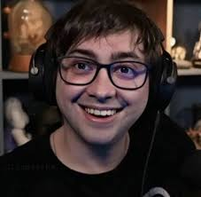

Uma das maiores estrelas brasileiras da Twitch
Alanzoka, nome artístico de Alan Ferreira Pereira, é um dos streamers brasileiros mais populares e influentes da plataforma Twitch. Conhecido por suas transmissões energéticas e divertidas, principalmente de games, Alanzoka conquistou uma legião de fãs que acompanham suas aventuras online. Sua espontaneidade e carisma o tornaram um dos principais nomes do cenário gamer brasileiro, contribuindo para o crescimento do streaming no país.